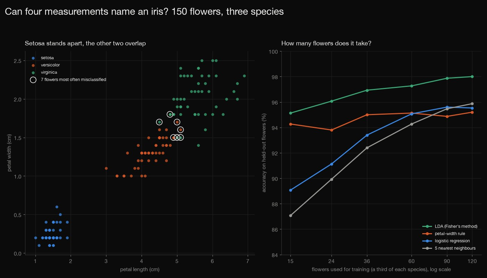
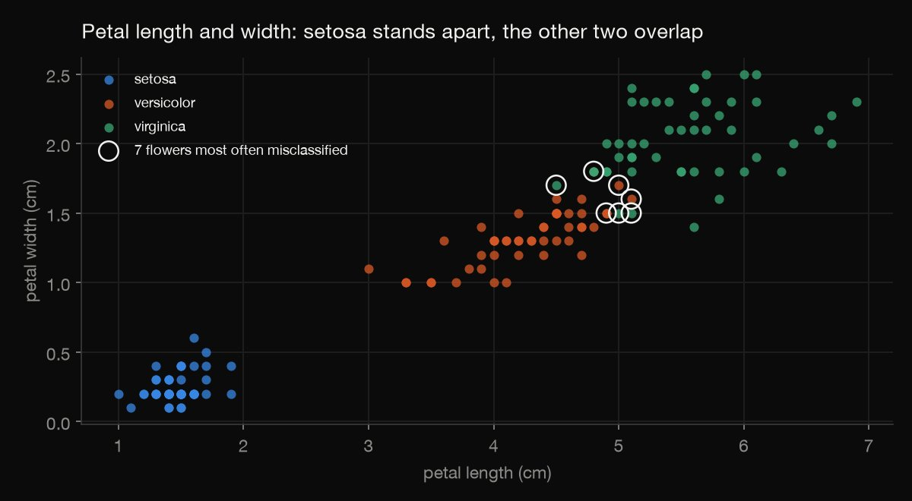
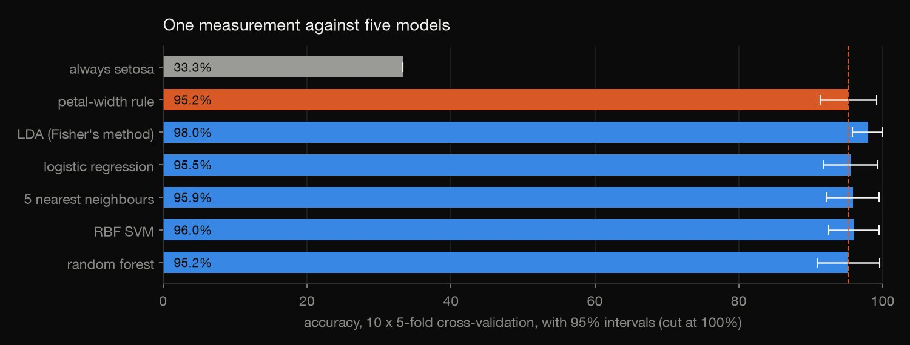
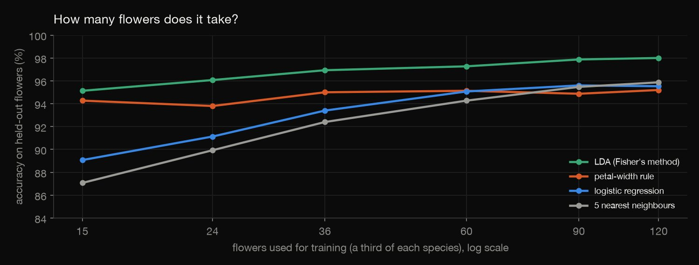
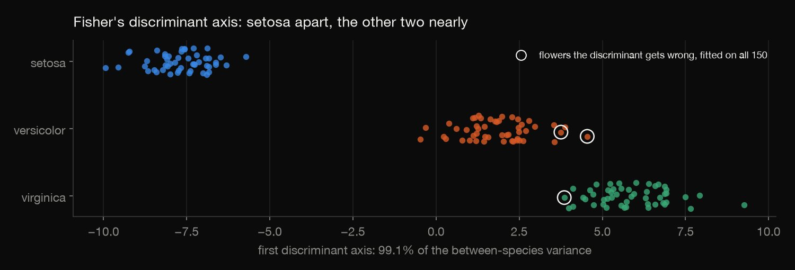

Python · Predictive modeling · 2026-10
Can Four Measurements Name an Iris?
Fisher's 150 iris flowers: setosa is set apart by one cut in petal length, petal width alone names 95.2% of all three species, and models that use all four measurements add at most 2.8 points, a gain 150 flowers cannot tell from chance.

150 flowers of three species measured to 0.1 cm: the results say nothing about other irises. The best one-measurement rule was picked on the same folds it is compared on, which flatters it slightly, and intervals near 100% run past it and are cut there. LDA's 2.8-point lead is not distinguishable from chance (p = 0.097). "Hard" flowers (wrong in at least 20 of 50 out-of-fold predictions) are a cut-off of mine.
01 — The problem
In 1936 Ronald Fisher used 150 iris flowers to show how several measurements can be combined to tell species apart. How well can four measurements name an iris, how much do the other measurements and the models add over a single one, and which flowers fool every method?
The questions follow GeeksforGeeks' "Iris Flower Dataset Analysis and Predictions". The data is the UCI copy of Fisher's dataset: real measurements of 50 flowers of each of three species, not a course file.
02 — What I built
150 flowers, audited and modelled:
- Audit: counts, duplicates, the two typos UCI documents (measured against its corrected copy), and where the species overlap.
- One measurement: a two-threshold rule for each measurement, found by trying every pair of thresholds.
- Methods on the same folds: the rules, Fisher's discriminant (LDA), logistic regression, 5 nearest neighbours, an RBF SVM and a random forest, in 10 × 5-fold cross-validation with corrected intervals.
- How much data it takes, and which flowers are hard.
- Check:
check.pyrecomputes 1,862 numbers and refits the rules and LDA by hand on every fold.
03 — How it was built
- 01
Download both copies of the table
UCI's dataset 53 (CC BY 4.0). The zip holds
iris.data, which differs from Fisher's article in two lines (UCI's own note says so), andbezdekIris.datawith those lines corrected. Each is 4.5 KB, so both are committed with their checksums. The analysis uses the corrected copy and repeats the comparison on the other. - 02
Audit, including the two typos
150 flowers, 50 per species, nothing missing. The two files differ in three values on lines 35 and 38, and
iris.datahas three duplicate rows against one in the corrected file (lines 35 and 38 copy line 10). Setosa's longest petal is 1.9 cm and the shortest versicolor petal is 3.0 cm; versicolor and virginica overlap, with 37 of those 100 flowers between 4.5 and 5.1 cm. - 03
A rule for each measurement
Two thresholds make three intervals, and each interval predicts its majority species. Every pair of thresholds at the midpoints between neighbouring values is tried, the pair with the fewest training errors wins, and ties go to the smaller thresholds.
correct = left.max() + mid.max() + right.max() if best is None or correct > best[0]: - 04
Five models against the best rule
Always guessing setosa, the four rules, Fisher's linear discriminant (LDA), logistic regression, 5 nearest neighbours, an RBF support-vector machine and a random forest, on the same 10 × 5-fold folds. The 50 fold scores are not independent, so the intervals are corrected (Nadeau–Bengio) and each method is compared with the best rule on the same folds.
se = np.sqrt((1 / J + n_test_over_train) * v.var(ddof=1)); t = stats.t.ppf(0.975, J - 1) - 05
How many flowers does it take?
The best rule, LDA, logistic regression and 5 nearest neighbours are trained on 5, 8, 12, 20, 30 and 40 flowers per species, drawn at random from each training fold, and scored on the held-out fold: 50 splits for each size.
sub = np.sort(np.concatenate([rng.choice(tr[y[tr] == c], k, replace=False) for c in range(3)])) - 06
Which flowers are hard?
Five models predict each flower in each of 10 repeats, always without having seen it: 50 predictions per flower. The confusion counts show where the mistakes fall, and the flowers most often wrong are listed. Fisher's discriminant is also fitted on all 150 flowers to see how much of the between-species variance its first axis carries.
- 07
Recompute it by hand
check.pyrecomputes 1,862 numbers with different code: the audit and the differences between the files from the raw text, the rules by a plain-Python search on every fold, the fold scores and corrected intervals, Fisher's discriminant refitted by hand (class means, a pooled covariance, a linear solve) on every fold, every learning-curve sample and all 150 flowers, the axis share from the eigenvalues, and the confusion and hard-flower counts. The hand-fitted discriminant and the rules agree with the saved predictions on all 50 folds, with no differences. The other four models are not refitted.w = [np.linalg.solve(S, m) for m in mu]; prior = Counter(ytr) return [(w[c], -0.5 * mu[c] @ w[c] + math.log(prior[c] / n)) for c in range(K)]
04 — Results

Setosa stands apart; the other two overlap. The longest setosa petal is 1.9 cm and the shortest versicolor petal is 3.0 cm; the widest setosa petal is 0.6 cm against 1.0 cm for versicolor. Versicolor petals run up to 5.1 cm and virginica from 4.5 cm: 37 of those 100 flowers (21 versicolor, 16 virginica) have a petal length in that stretch, and 38 (22 and 16) have a petal width between 1.4 and 1.8 cm.
| One measurement | Accuracy | 95% CI |
|---|---|---|
| Petal width | 95.2% | 91.3–99.1 |
| Petal length | 94.5% | 90.6–98.4 |
| Sepal length | 73.0% | 66.9–79.1 |
| Sepal width | 53.0% | 46.4–59.6 |
One measurement nearly does it. The accuracy of a rule with two thresholds on a single measurement, in cross-validation: petal width 95.2% and petal length 94.5% against 73.0% and 53.0% for the sepals; always guessing setosa gets 33.3%. Fitted on all 150 flowers, the petal-width rule is: setosa below 0.80 cm, versicolor up to 1.65 cm, virginica above; it gets 6 of the 150 wrong.

| Method | Accuracy | 95% CI | Gain |
|---|---|---|---|
| Width rule | 95.2% | 91.3–99.1 | – |
| LDA | 98.0% | 95.8–100 | +2.8 |
| Logistic | 95.5% | 91.7–99.4 | +0.3 |
| 5-NN | 95.9% | 92.2–99.5 | +0.7 |
| SVM | 96.0% | 92.5–99.5 | +0.8 |
| Forest | 95.2% | 90.9–99.5 | 0.0 |
The models add little. The columns are cross-validated accuracy, its corrected 95% interval (cut at 100%), and the gain over the petal-width rule in points on the same folds. Fisher's own method, the linear discriminant (LDA), is the best at 98.0%, a gain of 2.8 points with an interval of −0.5 to +6.1 (p = 0.097); the other four gain between 0.0 and 0.8 points, and every one of their intervals includes zero.

LDA and the rule need few flowers; the others need more. Trained on 15 flowers (5 per species), LDA is right 95.1% of the time, the petal-width rule 94.3%, logistic regression 89.1% and 5 nearest neighbours 87.1%; on 60 flowers 97.3%, 95.1%, 95.1% and 94.3%; on 120 98.0%, 95.2%, 95.5% and 95.9%. The rule stays between 93.8% and 95.2% at every size. Each figure is the mean of 50 splits.
| Flower | Species | Called | Wrong |
|---|---|---|---|
| 84 | versicolor | virginica | 49 |
| 134 | virginica | versicolor | 47 |
| 107 | virginica | versicolor | 40 |
| 120 | virginica | versicolor | 39 |
| 71 | versicolor | virginica | 35 |
| 78 | versicolor | virginica | 34 |
| 73 | versicolor | virginica | 20 |
Which flowers are hard. Flowers are numbered by their line in the file. Of 7,500 predictions by the five models (150 flowers, 10 repeats, 5 models), 291 (3.9%) are wrong: 290 swap versicolor and virginica (141 and 149) and one calls a setosa a versicolor (flower 42, once). 134 flowers are never wrong. The table lists the seven that are wrong in at least 20 of their 50 predictions, with the species most models call them.

Fisher's axis. Fitted on all 150 flowers, the first discriminant axis carries 99.1% of the between-species variance, so one number per flower is almost enough; the discriminant misclassifies 3 of the 150 flowers it was fitted on (lines 71, 84 and 134), which are among the seven above.
The two typos. UCI's two copies of the table differ in three values on lines 35 and 38 (line 35: petal width 0.1 against 0.2; line 38: sepal width 3.1 against 3.6 and petal length 1.5 against 1.4). Running everything on the uncorrected file changes no method's accuracy by more than 0.2 points, and LDA's does not change at all.
05 — What I'd do next
- Try the same questions on a larger, messier plant dataset, where the species do not separate this cleanly.
- Check whether the hard flowers are mislabelled or just unusual: they are the ones to measure again first.
- Choose the best one-measurement rule by nested cross-validation, so it is picked without seeing the folds it is scored on.